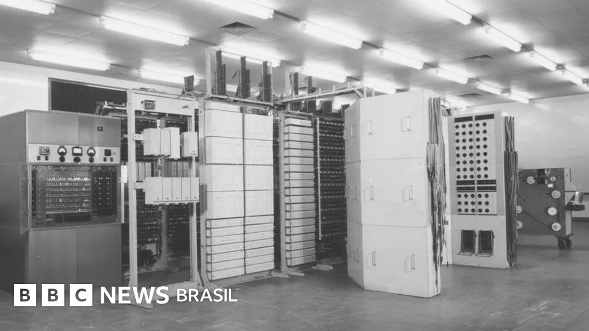
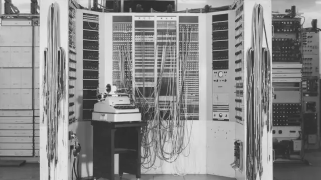

O Colossus foi um dos primeiros computadores eletrônicos da história e teve um papel fundamental durante a Segunda Guerra Mundial. Ele foi desenvolvido na Inglaterra, em 1943, por uma equipe liderada por Tommy Flowers, com o objetivo de ajudar na quebra de códigos secretos alemães.
Esse computador era usado principalmente para decifrar mensagens criptografadas pela máquina Lorenz cipher, utilizada pelo alto comando nazista. Ao interpretar essas mensagens, o Colossus contribuiu diretamente para as estratégias militares dos Aliados.
O Colossus funcionava com válvulas eletrônicas (tubos a vácuo) e era muito mais rápido que os métodos manuais da época. Ele não era um computador de uso geral, como os de hoje, pois foi projetado especificamente para uma tarefa: análise de códigos.
Apesar de sua importância, o projeto Colossus foi mantido em segredo por muitos anos após a guerra, o que fez com que seu reconhecimento na história da computação demorasse a acontecer.
 